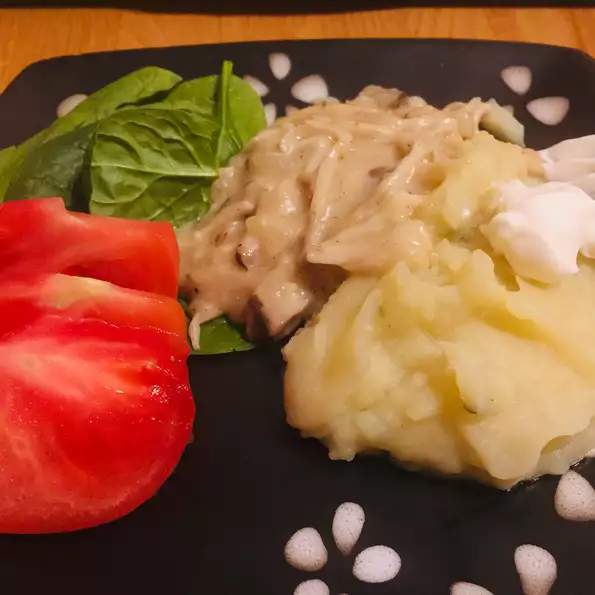

Mushroom Stroganoff

Description
This delicious veagan meal will surely make your guests mouths water. We started with the best and most fresh mushrooms around. Add in some love and almond milk and you will never want to eat your moms beef stroganoff ever again.
Ingredients
- 8 ounces oyster mushrooms
- 1 tablespoon oil, or to taste
- 1 small onion, diced
- 1 tablespoon all-purpos flour
- 1 cup almond milk
- 1 tablespoon lemon juice
- salt and ground pepper to taste
Directions
- Shred mushrooms with a fork
- Heat oi in skillet over medium-high heat. Add mushrooms and onion and fry until soft, 2 to 3 minuntes. throw in flour, stir well, and fry for another minute.
- Stir in almont mild and lemon juice until well combined. Simmer for 7 to 8 minutes. Season with salt and pepper